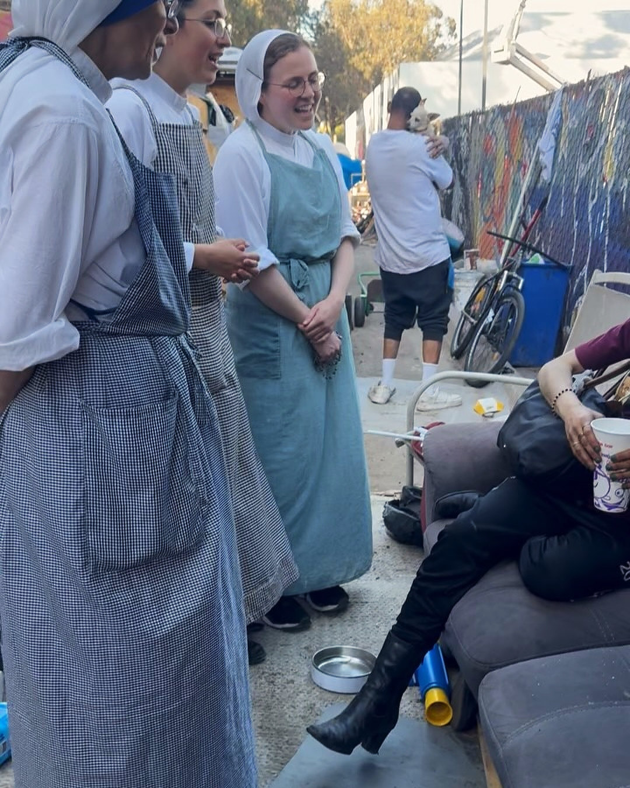
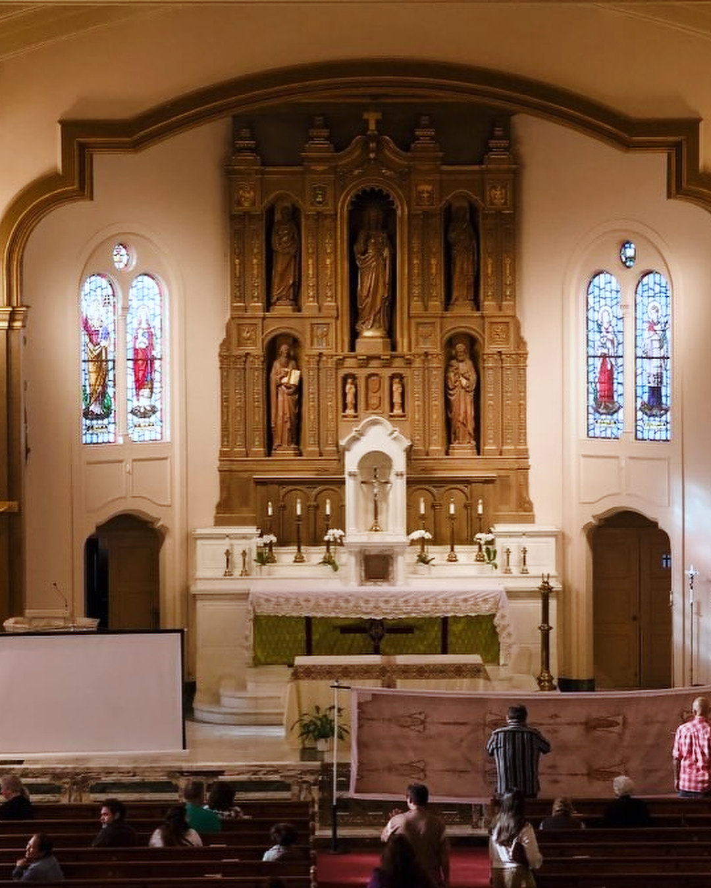

The format
A talk, thenthe action
Catholic Leaders in Action is a community formed in partnership with the Archdiocese of San Francisco, dedicated to connecting and equipping Catholics who desire to lead with conviction, excellence, and faith in everyday life.
Each lecture and social event is designed to be allied with a direct ministry action of some kind.


Piety and devotion stay in one compartment; work, social life, even family life remain in another.
Next · Tuesday October 6
Called torelationship
Dating, love, and the spiritual battle for our relationships.
- Speaker
- Ed Hopfner, Director of Marriage and Family Life, Archdiocese of San Francisco
- Panel
- Paul Campa
- Evening
- 6:30 PM reception and check-in, then talk, panel and networking reception
- Ticket
- Free · Ages 21 to 40 · Registration required
The action · Saturday October 10
10 AM to 2 PM · St. Vincent de Paul, Division Circle Navigation Center. Helping organize and sort donations and supplies.

The record
Five evenings,one action
- June 2Called to Lead
- July 7Rights and Responsibilities
- July 30The man of the Shroud
- August 5Called to Serve
- August 29 · The actionWith the Missionaries of Charity
- September 1The Work of Human Hands


Leaders
The foundersand the chaplain
- Saul PerezCo-founder
- Daniel RamirezCo-founder
- Jerry Sharp IIICo-founder
- Fr. Tom MartinChaplain

In partnership with

What is Catholic social teaching?
The Church's own teaching on how people are meant to live together, at work and in public.
Do I have to be Catholic?
Nothing in the listings says you must be. The one condition is age: 21 to 40.
Do I need to know anything first?
No. Each evening stands alone.